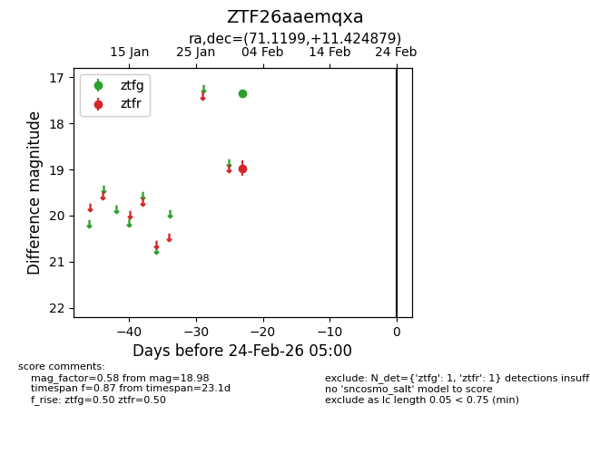
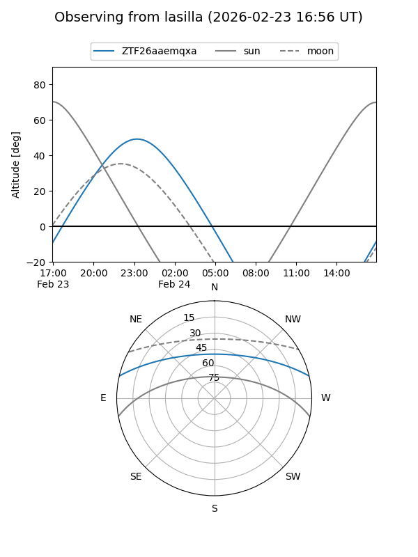
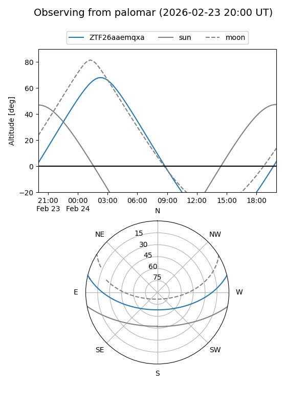

ZTF26aaemqxa
Target ZTF26aaemqxa at 2026-02-24 09:08
Aliases and brokers:
FINK: link
Lasair: link
ALeRCE: link
alt names
ZTF26aaemqxa (ztf,fink_ztf)
Coordinates:
equatorial (ra, dec) = 71.1199,+11.42488
equatorial (HMS+DMS) = 04:44:28.77,+11:25:29.56
galactic (l, b) = (186.6638,-21.62850)
Flags:
Photometry:
last ztfg=17.34, ztfr=18.98
1 ztfg, 1 ztfr detections
Lightcurve

Visibility


Additional plots